Joint Genome Institute · 2020
Viralnet
Data visualization of virus genomes, in partnership with Dr. Russell Neches, computational biologist at the Joint Genome Institute (JGI).
Force-directed graphs are common in computational biology, but they're often an ugly mess and exceedingly difficult to navigate. This is our aspiration for a scientific tool of the future.
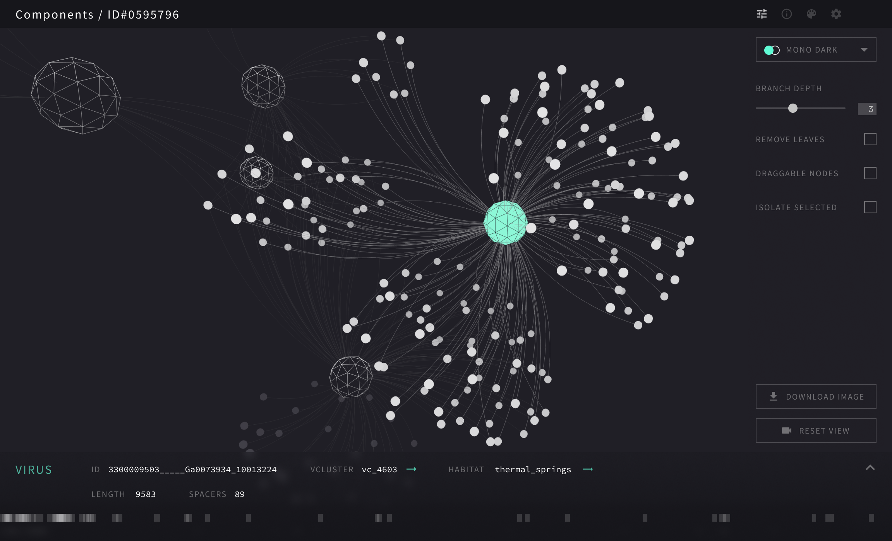

All nodes loaded at once.

Loading nodes gradually gives a very different effect.
Renders
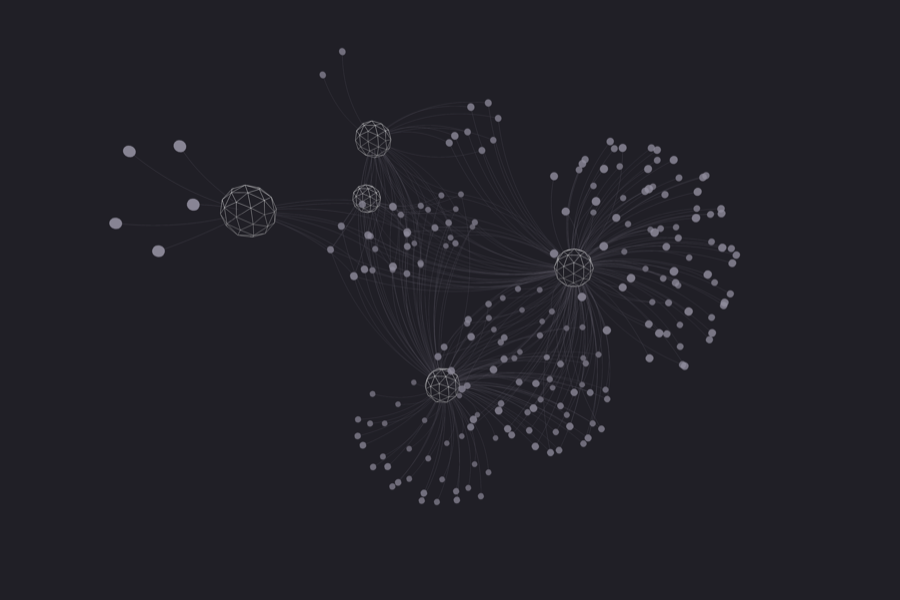
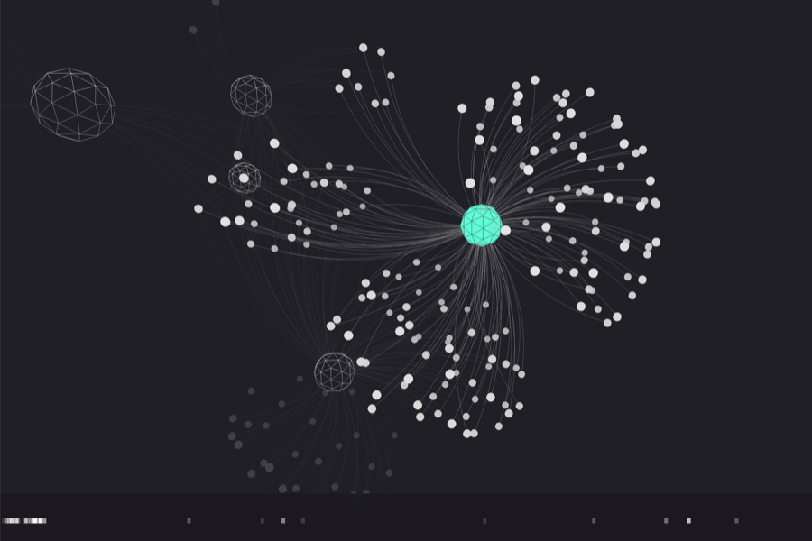
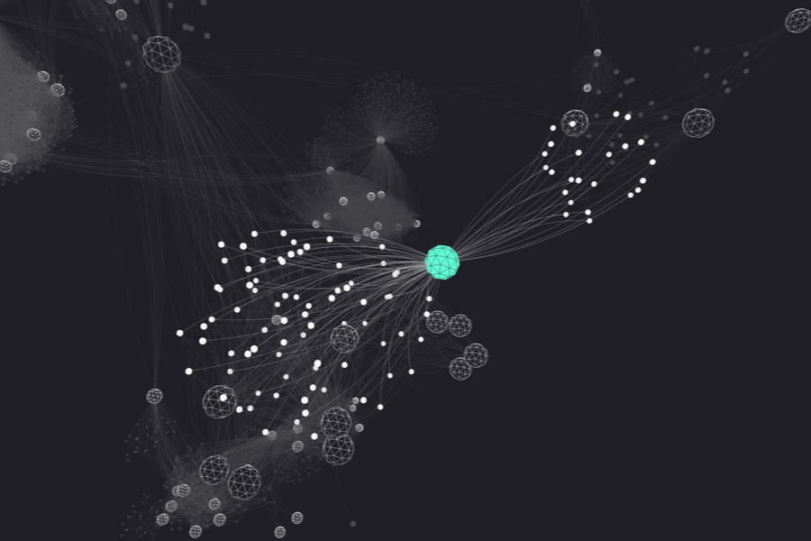
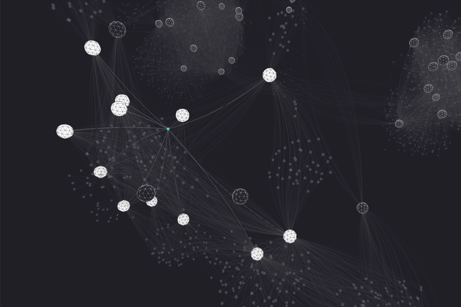
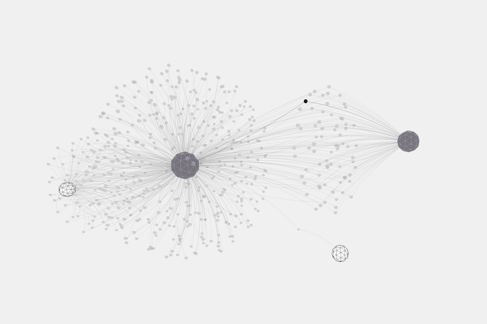
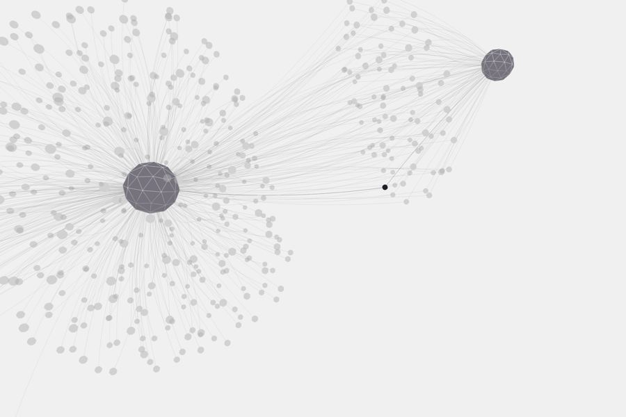
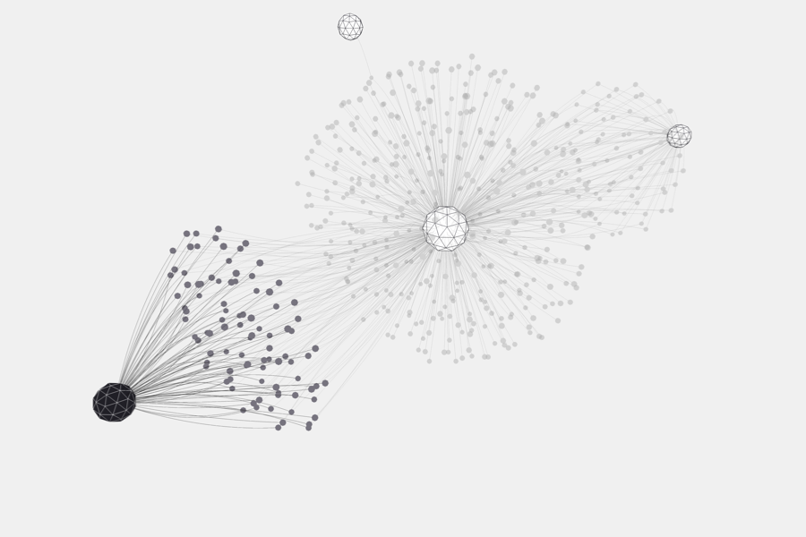
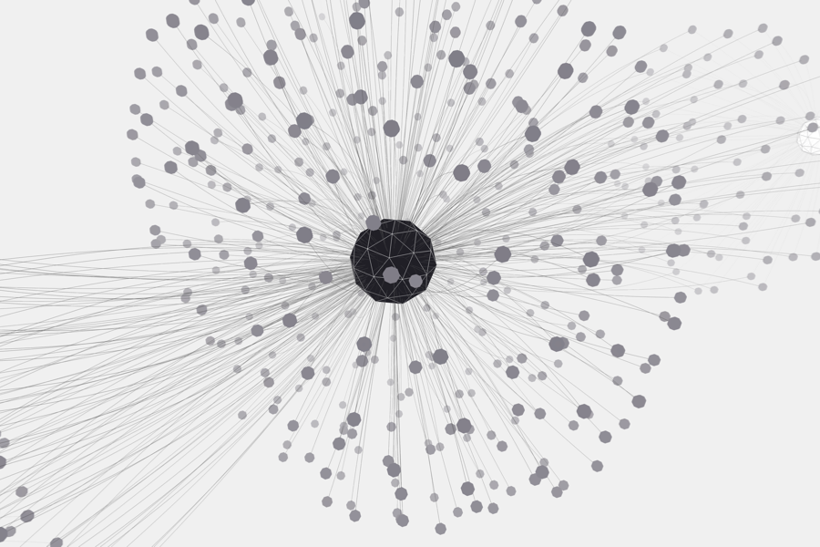
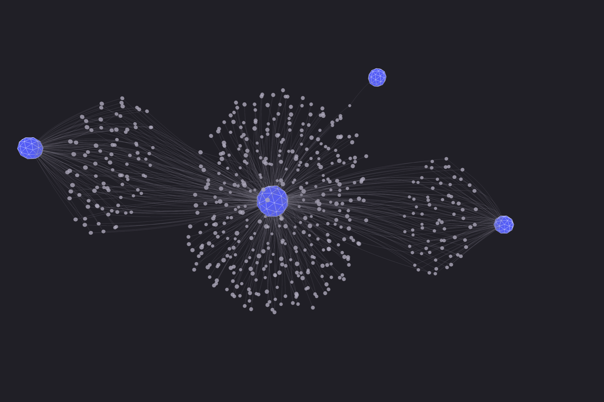
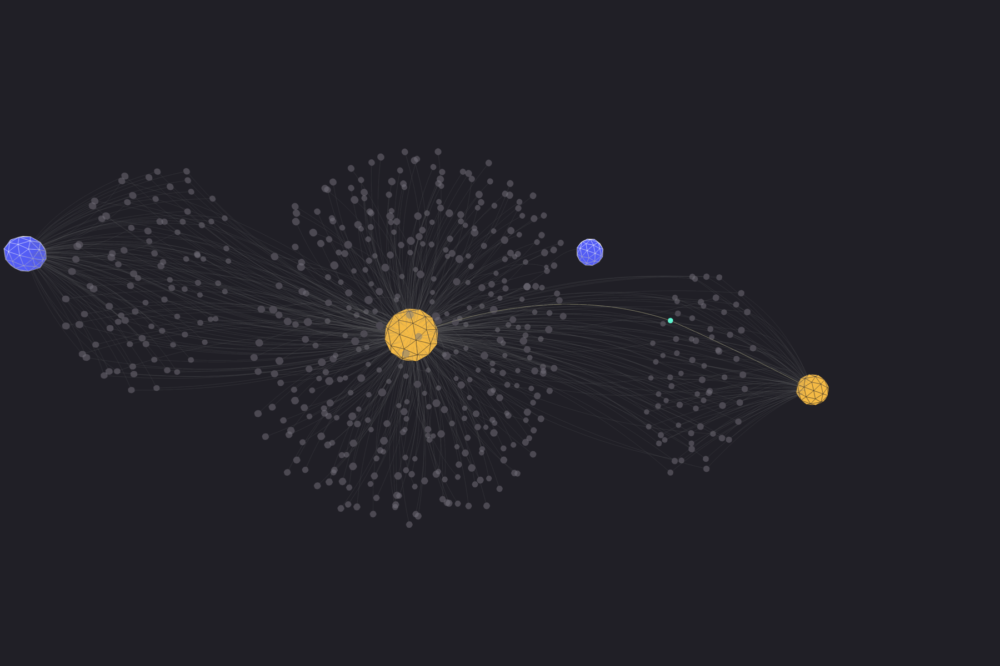
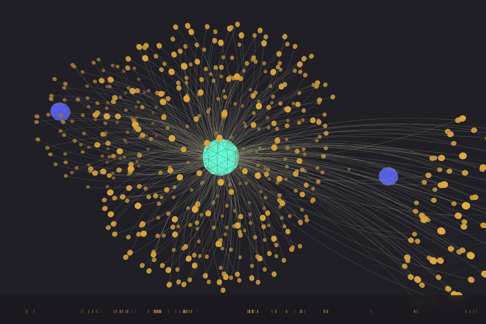
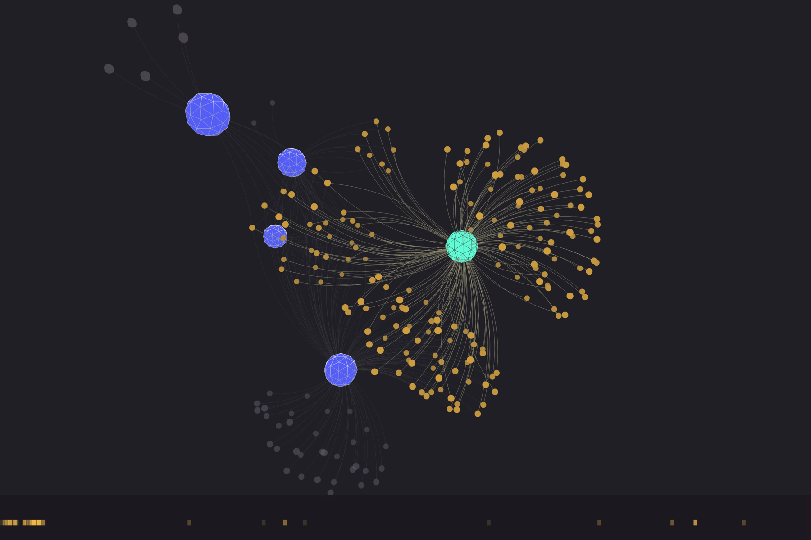